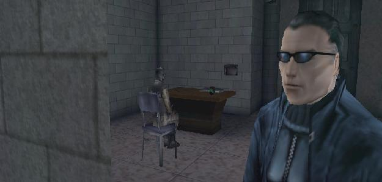
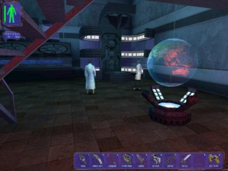
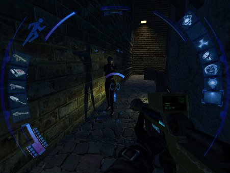
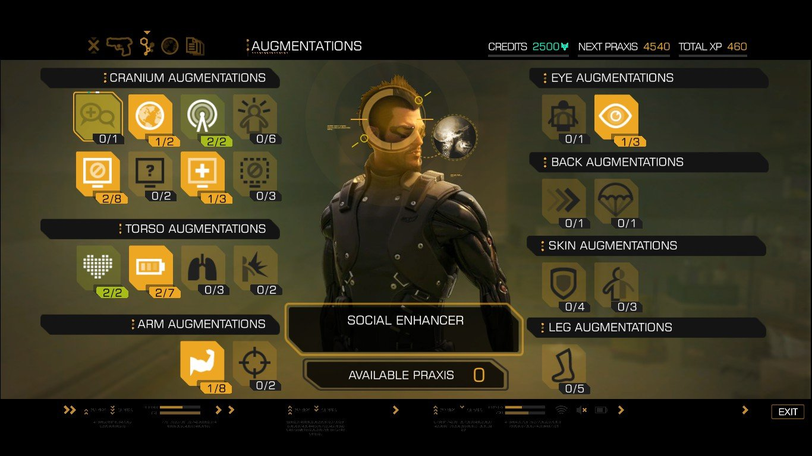

Deus Ex
2000 год, Ion Storm Austin
I wear my sunglasses at night.
Осенью 1997 года легендарный дизайнер Джон Ромеро уже вовсю рассказывал журналистам, какой крутой и революционной будет грядущая игра его новой студии Ion Storm. Уйдя из id, Ромеро продолжал ее обеспечивать, оплачивая использование технологий, который придумал его бывший коллега Джон Кармак. Помимо этого, деньги студии постоянно уходили на зарплаты, офис и сорванные сроки — возомнив себя несокрушимым мессией индустрии, Ромеро тянул собственный бизнес на дно. Но в сентябре выяснилось, что Уоррен Спектор, один из создателей System Shock, Thief и массы других культовых игр, ищет работу — так была открыта Ion Storm Austin, которая существовала в отрыве от общей публичной политики Ромеро с присущим ему позерством. Спектор считал шутеры от первого лица довольно бестолковым жанром и предпочитал работать над жанром «иммерсивных симуляторов».
История человечества не знает случаев перемещения человека в другой мир. Вся наша жизнь проходит в этом. Но игра – идеальная возможность попробовать что-то новое. Я никогда не смогу полетать на самолете времен Первой мировой, никогда не побываю на космической станции и точно не буду супершпионом. Но в играх я могу воссоздать любую из этих ситуаций
— Спектор относился к видеоиграм как к возможности не просто развлечься, но побывать где-то, стать кем-то, почувствовать что-то иное.
В пятидесятых годах XXI века мир поразил страшнейший вирус, а единственную вакцину в промышленных масштабах постоянно воруют террористы. В роли Джей Си Дентона, агента свежеобразованной организации UNATCO, которая работает под эгидой ООН, игрок погружается в густую атмосферу заговоров, финансовых махинаций, таинственных исчезновений и преступлений против человечества. Концовок в Deus Ex было много, и все — плохие.
Идеи оригинального Deus Ex гораздо масштабнее,чем в последующих частях
Как бы банально это ни звучало, в оригинальном DX все же глубже, шире и, если угодно, выше остальных частей. Сюжет первой части — это в большей степени история о человечестве, тогда как сюжет Human Revolution, да и грядущего Mankind Divided — это, скорее, история о человеке. Да, она более трогательная, более психологичная, но там нет и не будет того масштаба и сногсшибательного размаха, который заставил нас просто сойти с ума от развязки этой игры в 2000 году.
Это ортодоксальный киберпанк
На протяжении всей игры сценарий Deus Ex пытался то выбить землю из-под ног игрока, то смешать с его грязью, то возвысить до божества. Human Revolution ушла от этого и рассказала проникновенную историю о чувствах человека с тяжелой судьбой. Исходная концепция гораздо более киберпанковая по своему духу. Патриархи течения всегда отворачивались от человеческого в сторону сверх-человеческого и от эмоций к чистому (и обязательно циничному) разуму.
Deus Ex — это ветхозаветная история о Конце времен в мире киберпанка
На текстуре Нью-Йорка не хватает башен-близнецов. Игра вышла до трагедии 11 сентября, но в сценарии есть уточнение: ВТЦ нет в Deus Ex, его взорвали террористы. Вы прослушали знаменитую байку о том, как DX предугадал будущее.
Понятно, почему в Human Revolution и Mankind Divided фокус сужен до истории одного человека и отношений киберменьшинств с остальным обществом. В Deus Ex нам уже показали максимально возможный масштаб проблемы: главный герой начинает свой крестовый поход как скромный агент, который мало что понимает про окружающий мир, а заканчивает его как непостижимое божество, альфа и омега. В Deus Ex мы получили рассказ о том, как человечество пришло к технологической сингулярности, точке, за которой понять и предсказать ничего невозможно, а значит, и рассказывать больше попросту не о чем. Это классическая ветхозаветная история о Конце времен в сугубо киберпанковом атеистическом сеттинге. Причем апокалиптичность касается и других концовок: цивилизация, отброшенная в Темные века — тоже своего рода точка в истории. Попытка продолжить развивать идею и мусолить ее после концовки привела бы той же ошибке, что была допущена в Deus Ex: Invisible War.
Музыка, которая будет жить вечно
Музыкальное сопровождение Deus Ex, хоть и создавалось по старинным лекалам, врезалось в память намертво — и не раз возвращалось к нам в Human Revolution, композитор которой, Майкл Маккан (также — XCOM: Enemy Unknown) несколько раз цитировал фрагменты культового оригинального саундтрека в собственной работе. Футуристическая и где-то потусторонняя музыка Deus Ex — одно из сокровищ, которые оставила после себя эта игра.
Свобода выбора и сила случая
Уоррен Спектор руководствовался простым принципом: в каждой ситуации у игрока должно быть как минимум три пути решения проблемы. Нужно попасть в определенное здание? Перестреляйте охрану и ворвитесь через парадный вход под вой сирены; станьте невидимым и пройдите мимо часовых, отключив системы безопасности, камеры, и роботов, которым ваша невидимость по боку; исследуйте уровень и зайдите через люк в потолке, никого не убивая — вообще, весь Deus Ex можно пройти, и пальцем не пошевелив в сторону ликвидации живой силы противника. Исследование было одной из ключевых задач игрока — личные переписки, потайные лазы: в Deus Ex можно было найти случайную дверь на улице, взломать ее и попасть в секретные казармы сил зла, не понимая при этом — так и должно быть, или вы только что нарушили какую-то повествовательную логику. Но нет, даже после хаотичных, суетливых метаний по локации, которые заканчивались бегством через закрытое окно на балкон соседнего дома, все продолжало работать.
При этом в Deus Ex есть место и микродрамам: в частности, у главного героя есть старший брат, с которым связан не один лихой сюжетный поворот; среди коллег Дентона есть двое агентов старого образца — такие же, как Дженсен из HR и Mankind Divided: с железными руками и ногами, устаревшие и озлобленные на нового агента, у которого нанороботы буквально носятся по кровеносным сосудам. Таких мелочей в игре просто невероятное количество, и о некоторых из них узнать можно только при многократном прохождении — что, как вы понимаете, не было существенной проблемой 16 лет назад, когда большая часть из нас еще даже в институт не поступила.
— Владимир Бровин, Петр Сальников
Deus Ex: Invisible War
Ion Storm Austin, 2003
Invisible War делалась для набирающей дикую популярность приставки Microsoft Xbox — отсюда и маленькие уровни, и несколько сниженная сложность, и управление и интерфейс, заточенные под геймпад. За это, главным образом, Invisible War и принято ненавидеть в русскоязычном игровом сообществе — большинство из нас играли в скверно портированную ПК-версию, плевались от радиальных меню и ощущения, что свобода Deus Ex затерялась где-то на маленьких картах.
Между тем, Invisible War — вовсе не такая плохая игра, как принято считать. Во-первых, несмотря на уменьшившийся размер городов-хабов, в игре по-прежнему были все лучшие моменты Deus Ex: свобода выбора, множество путей к одной цели, различные фракции и персонажи с конфликтующими квестами, отличный сюжет. Некоторым вещам упрощение пошло только на пользу: в инвентаре стало удобней копаться, разные типы оружия имели общий пул патронов — в общем, многое сделали не только для консольной аудитории, но и для людей в целом. Тем, кто был не в курсе приключений Джей Си Дентона, игра аккуратно рассказывала предысторию, попутно окуная в насыщенный мир игры. Жаль только, что вся история заканчивалась за жалкие 10-12 часов — в два раза меньше, чем через много лет будет в Deus Ex: Human Revolution, когда возможности консолей подрастут, а за разработку возьмутся фанаты серии из Eidos Montreal.
— Кирилл Перевозчиков
Почему об Invisible War вспоминать не принято
Все помнят про великую оригинальную Deus Ex, а также про сравнительно недавний замечательный приквел Deus Ex: Human Revolution — но, кажется, никто и не подозревает о существовании игры, которая появилась между ними. В 2003 году тогда еще независимая Eidos выпустила Deus Ex: Invisible War от тогда еще живой Ion Storm Austin, и эта игра… Сначала думал написать, что разделила общественность на два лагеря, но на самом деле нет — подавляющее большинство играющей публики посчитало, что эта игра была очень плохой.
Я почти не помню никаких подробностей Invisible War — ни нюансов сюжета, ни уровней (кроме обрывочных фрагментов), — частично потому, что дело было 13 лет назад, но и потому тоже, что игра, конечно, была далеко не столь запоминающейся и новаторской, как оригинал (впрочем, на то он и оригинал, что был первым, а значит, лучше запомнился, правда?). Но я помню, как я ее ждал. И помню не менее отчетливо, как негодовал, читая в интернете крайне негативные отзывы — потому что играл в Invisible War, получая искреннее удовольствие.
Я помню, каким откровением Invisible War казалась на стадии разработки. Эти великолепные скриншоты, тогда казавшиеся окошками в мир игр нового поколения, с запредельной детализацией и атмосферой. Это ожидание продолжения одной из лучших игр всех времен от все той же легендарной команды, которая просто не могла подвести. Геймплейные ролики казались чем-то невероятным. Думалось, что Invisible War с пути к славе и признанию не могло столкнуть ничто.
Столкнули — и это сделала консоль Xbox (самая первая). 2003 год был тяжелым временем для уже начавшего загнивать хардкорного ПК-гейминга: издатели все больше обращали внимание на консоли и начинали приоретизировать разработку под них, выпуская на ПК неряшливые порты. Invisible War стала одним из главных примеров того, каким болезненным ударом такой подход стал по играм на ПК: сиквел к одной из лучших, фундаментально ПК-шных (в лучшем смысле этого слова) игр всех времен оказался косым портом с чудовищно урезанной (по сравнению с теми волшебными превью-скриншотами) детализацией уровней, «мыльной» графикой со странным эффектом bloom, неудобным управлением и — самое ужасное — крохотными уровнями.
За всем ворохом технических проблем, тем не менее, скрывалась игра, простите, с душой. Размеры и размах карт порезали, но пропорционально возросло их количество — проще говоря, если в первом Deus Ex какой-нибудь секретный комплекс представлял собой одну большую карту, то в Invisible War он состоял из пяти кусков; неприятно, но для меня было совсем не смертельно. Несмотря на излишнюю замкнутость пространств, игра была напичкана альтернативными путями, потайными ходами, вентиляционными шахтами и вообще миллионами возможностей — до такой степени, что иногда было видно, как некоторую общечеловеческую логичность пространств в дизайне уровней приносили в жертву техническому правилу «не меньше трех путей в каждое помещение». Недостаток полигонов и резкости в текстурах компенсировал приятный art direction — что ни говори, а Invisible War была красивой и стильной игрой.
В попытках быть сбалансированной и по-настоящему разнообразной, — а то, что Invisible War очень хотела быть и местами была таковой, не заметил, кажется, почти ни один рецензент, кроме великого Кирона Джиллена из британского PC Gamer, — игра иногда противоречила здравому смыслу. Например, универсальная амуниция для всех видов оружия, за которую игру облили говном все, кому ни лень — с одной стороны, вроде, не реалистично и «упрощение», с другой — патроны стали ультимативной и понятной «валютой», оценкой мощи и значимости того или иного ствола. Ваш любимый дробовик не становился бесполезным, как только заканчивались патроны конкретно для этого оружия; достаточно было найти любые патроны, и веселье продолжалось. Игра не ставила перед вашей возможностью играть, как вам нравится, никаких преград. То же самое с аугментациями — если в оригинальной игре, чтобы прокачать то или иное умение, вам нужно было искать соответствующие именно нужному навыку канистры, в Invisible War любая канистра позволяла апгрейдить любое умение. Сейчас это кажется очевидной механикой, а в 2003 году игру за нее сильно критиковали. Опять же, директор игры Харви Смит практически кричал вам: играйте как хотите! Делайте, что хотите! К черту искусственные ограничения!
И это было круто. Это было иногда глупо, иногда нелогично, иногда криво, — но по большей части это работало и было круто. И Кирон Джиллен, как сейчас помню, поставил Invisible War 92 процента, и я до сих пор считаю, что он был абсолютно прав. За огромным слоем технической грязи разглядеть игру, которую на самом деле сделали с любовью и с умом, — а главное, с огромным уважением не только к оригиналу, но и к канонам жанра immersive sim — было непросто. Я тогда написал ему письмо, где сказал за эту рецензию «спасибо» — и у нас даже завязалась достаточно трогательная переписка. Человеку было приятно; Джиллен позже признавался, что после той рецензии столкнулся с колоссальным противодействием фанатов, считавших его дураком, и сильно переживал.
А еще я помню, как весело в 2003 году было играть с ragdoll-физикой тел и предметов — в том числе эксплуатируя бесчисленные уморительные баги ее реализации. Но еще круче было играться с честным освещением в реальном времени — когда вы светите фонариком, ходите вокруг ящика и видите, как от него отбрасывается реальная тень. В которой, кстати, можно было спрятаться — ведь в Invisible War, в отличие от Human Revolution, был тот самый стелс, основанный на свете и тени, как в оригинале. Удивительное дело, но в 2016 году игры с такой возможностью куда-то загадочно исчезли.
Потрясающее было время.
— Максим Самойленко
Deus Ex: Human Revolution
2011, Eidos Montreal
В 2011 году с видеоиграми произошло многое: вышла первая часть Dark Souls, The Elder Scrolls 5: Skyrim и ряд других памятных игр, но ключевым событием среди всех было возвращение Deus Ex. На этапе анонсирования грядущая игра одновременно вызывала и трепет, и страх за канон: авторы переработали стиль, интерфейс и добавили эпизодический вид от третьего лица, который включался, стоило герою припасть спиной к укрытию. «Укрытия! В Deus Ex!» — возмущались старожилы — но все случилось вопреки самым мрачным ожиданиям: мы получили именно тот Deus Ex, которого ждали.
Руководитель службы безопасности в ведущей корпорации по производству высокотехнологичных имплантов Адам Дженсен оказывается в эпицентре теракта, когда группа наемников устраивает в здании корпорации пожар и похищает ключевых ученых. Дженсен отправляется на поиски ценных сотрудников; среди пропавших без вести — его любовница.
Корыта жирнейшей атмосферы
Атмосфера Human Revolution — одна из вещей, за которую этой истории можно простить все что угодно. Глубина погружения иногда становится почти предельной: некоторые из деталей навсегда врезались в память и уже пять лет посещают нас во снах. Причем речь даже не о ярких моментах со спецэффектами, а о тех минутах, когда герой бродит по шанхайским подворотням или разглядывает полицейский участок Детройта, выискивая способ пробраться внутрь.
Вернувшись в Детройт по сюжету, мы испытывали чувство спокойствия, будто действительно снова очутились дома, бар в Хэнша создает убедительную картину того, как именно будут развлекаться в 2027 году — нас заставили поверить в то, что это не набор пикселей и условностей, а действительно живой мир, в котором происходит гораздо больше, чем мы видим в сюжете игры.
Human Revolution — действительно история о революции
Все, что мы видим в этой игре — предательства и героизм, неистовое стремление к технологическим и эволюционным пределам, а также овраг с нечистотами, в который попали простые обыватели — следствие мощнейшей революции, в таких масштабах, которые человечество прежде не знало. Начавшись как революция тела, она превратилась в революцию сознания и общества. Чем это кончится, мы помним из первой части, которая в ветхозаветном духе расскажет о Конце времен и человеческой расы в ее традиционном понимании.
Но главное, чем интересна показанная здесь революция, — сама по себе она не хороша и не плоха; она просто берет человечество за шкирку и выкидывает его в новый мир. То, что мы видим — это муки рождения нового порядка: будет еще больше смертей, несчастий и прозрений.
Это еще и очень человеческая история
В DXHR речь идет не о перекачанных героях и картонных персонажах, а о настоящих людях, которые мучительно пытаются выжить и понять, что вообще происходит. Вспомните месть ублюдку из «золотой молодежи», который убил беременную подругу вашего пилота, Фариды Малик. В этой миссии игрок старается не ради ачивок и прокачки, а из острого желания восстановить справедливость и наказать монстра.
Это выдающийся нуар
Deus Ex: Human Revolution — пример прекрасной стилизации под классический нуар. Соединение его с киберпанком можно назвать идеей, которая лежит на поверхности. Внешне они невероятно далеки: фантастический мир уличных самураев и эпоха жестких парней в классических костюмах из 50-х — но внутренне они весьма похожи. Атмосфера цинизма и пессимизма; всеобщее недоверие — все это роднит жанры и говорит о том, что одно явно вдохновляло другое.
I never asked for this
Слова Дженсена о том, что он «никогда не просил об этом», неспроста стали крылатыми: каждый из нас — немного Адам Дженсен. «I never asked for this» мог говорить абсолютно любой персонаж этой истории. Местный мир и сюжет перемалывает каждого, даже если внешне все выглядит как удачный исход. К тому же, с развитием киберпротезирования в нашей с вами реальности эта фраза становится по-настоящему актуальной.
Это пронзительная история любви
Следуя всеобщей моде на очеловечивание сюжетов, Human Revolution подчеркивает, что Дженсен ищет не мести или справедливости — в сухом остатке его главный мотиватор — любимая женщина, без которой ему довольно погано. Быстрая экскурсия по квартире Адама дает понять, что мужик в одиночестве сам не свой. Он пьет, бьет посуду и даже разбил зеркало в ванной — и от одиночества, и от одного вида того, чем он стал. На протяжении всей игры эта грань личности Дженсена обрастает все большим объемом трагедии — и в финале обваливается самым, черт подери, мерзким образом.
Быть половозрелым мужчиной и не прийти в этот момент в ярость, сопереживая Дженсену, физически невозможно.
Великий саундтрек
Музыка, написанная Майклом Макканом для Deus Ex: Human Revolution продается в iTunes как полноценный альбом — и, если выкинуть оттуда интенсивные боевые треки, этот альбом можно смело называть лучшим сборником эмибента для прогулок по городу в любое время суток. Уже пять лет он не уходит с моего айфона, и все это время я смотрю на окружающие меня вещи несколько иначе — через призму Deus Ex.
— Владимир Бровин, Петр Сальников
Deus Ex: The Fall
Deus Ex, который понравился одному человеку на планете — мне
Спустя некоторое время после выхода Human Revolution, издатель Square Enix объявил, что работает над созданием общей мифологии Deus Ex — она называется Deus Ex Universe. Обещали книги, комиксы, игры на разных платформах и прочее; одним из первых продуктов вновь образованной вселенной стал Deus Ex: The Fall — мобильная игра для Android и iOS, действие которой разворачивается параллельно действию Human Revolution, а главный герой — Бен Саксон, один из участников террористической группировки, которая напала на Дженсена в завязке DXHR.
Для мобильной игры со скотскими микротранзакциями (стоя за углом в разгар перестрелки, можно было зайти в инвентарь и купить себе гранатомет за рубли) это было очень неплохо: прохождение заняло около шести часов, а сюжет рассказал еще немного о драгоценном препарате нейропозине, вокруг кторого так усердно пляшут все, у кого есть протезы. Но самое крутое в The Fall — это, конечно, название отеля в Москве, где все начинается. Hotel Novoe Rostov — сказать, что я плакал от такого словообразования, когда впервые включил игру, означало бы даже немного преуменьшить.
Так или иначе, The Fall оборвалась на самом интересном месте и закончилась фразой “to be continued” — и неясно, на что рассчитывает Sqare Enix: может быть, на то, что я забыл о том, что такая игра была? Черта с два, гоните сиквел немедленно!
— Петр Сальников
Deus Ex: Mankind Divided
В последней на текущей момент части Deus Ex изменилось многое, хотя на первый взгляд и кажется, что это вполне закономерное развитие идей Human Revolution. Главный герой Адам Дженсен уже не отягощен личными мотивами, спокойно работает в Интерполе и, судя по поведению, окончательно пережил свое слияние с машиной — более того, тут порой вообще не до конца ясно, какая часть его личности превалирует: человеческая или роботизированная. Он регулярно пользуется и где-то даже злоупотребляет своими силами, наводя ужас не только на окружающих, но иногда и на игрока. И если эта художественная часть игры выглядит логичной, то все остальное в ней как будто утратило прежний люксовый статус — особенно на фоне Dishonored, вышедшей между Human Revolution и Mankind Divided.
Прага, в которой стартует игра, усеяна строительными люльками, при помощи которых можно залезть на балконы или крыши ближайших зданий; возле каждой запертой двери обязательно есть заметный вентиляционный люк; охранники то и дело встают в лужи, рядом с которыми обязательно болтаются оголенные провода. С точки зрения дизайна Mankind Divided — пожалуй, самая прямолинейная и непосредственная игра во всей серии. «Незамысловатая» — самый точный (и самый мягкий) эпитет.
Для полноценного иммерсив-сима в Mankind Divided многовато катсцен, которые превращают игрока в пассивного наблюдателя (в этом жанре так делать не принято), для полноценного стелс-экшена — сильный перекос в боевые способности героя, а для полноценного шутера — все еще слишком кривая стрельба, которая является своеобразной визитной карточкой серии с 2000 года.
Что называется, если бы Mankind Divided вовсе бы не было, никто бы не пострадал. Прослеживается определенная закономерность: по-настоящему крутые игры в серии получаются через раз. Революционный оригинал — проходная Invisible War; очень эмоциональная, глубокая и со всех сторон правильная Human Revolution — никакая Mankind Divided. В последней строке этого письма остается лишь выразить надежду на то, что мы все считали правильно, и следующая игра будет достойной классики. Хотя теперь, когда у нас есть две части великолепной Dishonored и непревзойденная Prey, надежды на это все меньше.
— Петр Сальников